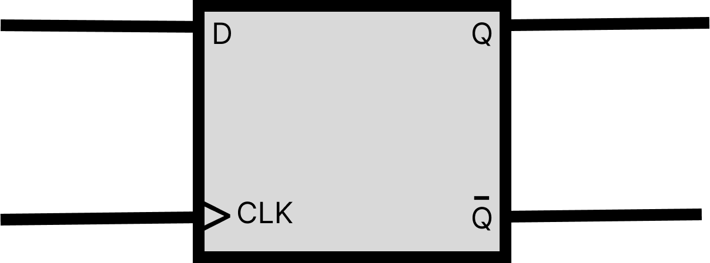

Registrador de 4 bits
Um registrador de 4 bits é um circuito sequencial utilizado para armazenar temporariamente 4 bits de informação (valores binários: 0 ou 1). Sua estrutura básica consiste em quatro flip-flops do tipo D conectados em paralelo, operando de forma sincronizada por um sinal de clock.
-
Cada flip-flop D possui:
- Uma entrada D (Data)
- Uma saída Q
-
Coletivamente o registrador possui:
- 4 entradas (D₀ a D₃) para receber bits
- 4 saídas (Q₀ a Q₃) para disponibilizar dados armazenados
Flip Flop D Síncrono

0
0
0
0
Resultado: 0000